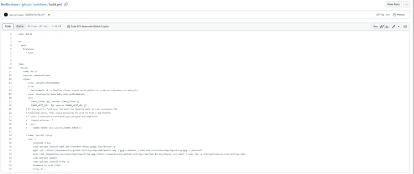

Netflix ish deployment
Automate the Process of deloying a containerized application
üöÄ Project Overview
This project aims to automate the deployment of an application using CI/CD tools. Here are the key feature :
-
GitHub Actions Integration: Utilize GitHub Actions for seamless automation of the CI/CD pipeline, facilitating continuous integration and deployment.
-
Docker Containerization: Containerize the Netflix-like application and its dependencies using Docker, ensuring simplified deployment and scalability.
-
Trivy Integration: Integrate Trivy for vulnerability scanning of Docker images, enabling early detection and mitigation of security vulnerabilities.
-
SonarQube Integration: Incorporate SonarQube for static code analysis to provide insights into code quality, security, and maintainability.
-
Environment Configuration: Implement configuration management to ensure consistent deployment across different environments.
üîß Problem Statement
The Automated Deployment of Containerized a Netflix-Like Application project aims to automate the deployment process of a video streaming platform using modern DevOps tools and practices. Leveraging GitHub Actions for CI/CD, Docker for containerization, Trivy for container image vulnerability scanning, and SonarQube for code quality analysis. GitHub Actions is an integrated continuous integration and continuous deployment (CI/CD) platform provided by GitHub that allows developers to automate various software development workflows. It enables you to create, customize, and share automated tasks, or “actions,” directly within your GitHub repositories. These actions can be triggered by events like code pushes, pull requests, or external inputs, and they can perform tasks such as building, testing, deploying, and more. GitHub Actions simplifies the automation of repetitive tasks, streamlining the software development process and ensuring code quality and consistency by automating various stages of the development lifecycle, ultimately helping teams to collaborate more efficiently and deploy code with confidence.
üíΩ Techonology Stack
● Server: EC2
● Containerization Platform: Docker
● CI/CD Platform: Github Actions
● Version Control: Github/Git
● Code Quality Analysis: Sonnarqube
● Security Scanning: Trivy
üìå Architecture Diagram
üö¶ Getting Started
üåü Prerequisites
Before diving into the project, let’s ensure that we have the necessary prerequisites.
- AWS account.
- AWS CLI.
- Dockerhub account.
- Git for cloning the repository.
üìã Table of Contents
- Step-1: Setup EC2 instance
- Step-2: Setup SonarQube
- Step-3: Integration SonarQube with GitHub Actions
- Step-4: Scanning file with Trivy
- Step-5: Push Docker container to Dockerhub
- Step-6: Create TMDB API Key
- Step-7: Add a self hosted runner to EC2
- Step-8: Final workflow to run the container
✨ Step-1-Setup-EC2-instance
Launch an “ubuntu (t2.medium) “ instance and login through “putty” or “mobaxtream” app.
✨ Step-2-Setup-SonarQube
Connect to your Ec2 instance using Putty, Mobaxterm or Git bash and install docker on it.
sudo apt-get update
sudo apt install docker.io -y
sudo usermod -aG docker ubuntu
newgrp docker
sudo chmod 777 /var/run/docker.sock
Pull the SonarQube Docker image and run it. After the docker installation, we will create a Sonarqube container (Remember to add 9000 ports in the security group).
docker run -d --name sonar -p 9000:9000 sonarqube:lts-community
Now copy the IP address of the ec2 instance
<ec2-public-ip:9000>
Provide the following Login and password:
login admin
password admin
Update your Sonarqube password & This is the Sonarqube dashboard
✨ Step-3-Integration-SonarQube-with-GitHub-Actions
First, clone the project on github using this link
Integrating SonarQube with GitHub Actions allows you to automatically analyze your code for quality and security as part of your continuous integration pipeline.
We already have Sonarqube up and running
On Sonarqube Dashboard click on Manually
Next, provide a name for your project and provide a Branch name and click on setup
On the next page click on With GitHub actions
This will Generate an overview of the Project and provide some instructions to integrate
Let’s Open your GitHub and select your Repository and Click on Settings,
Search for Secrets and variables and click on and again click on actions
It will open a page like this click on New Repository secret
Now go back to Your Sonarqube Dashboard
Copy SONAR_TOKEN and click on Generate Token
Click on Generate
Let’s copy the Token and add it to GitHub secrets
Now go back to GitHub and Paste the copied name for the secret and token
Now go back to the Sonarqube Dashboard
Copy the Name and Value
Go to GitHub now and paste-like this and click on add secret
Our Sonarqube secrets are added and you can see
Go to Sonarqube Dashboard and click on continue
Now create your Workflow for your Project. In my case, the Netflix project is built using React Js.
Now it Generates and workflow for my Project

Go back to GitHub. click on Add file and then create a new file.
Go back to the Sonarqube dashboard and copy the file name and content
File name is:
sonar-project.properties
The content to add to the file is
sonar.projectKey=Netflix
Add in GitHub like this
Let’s add our workflow
To do that click on Add file and then click on Create a new file as
.github/workflows/build.yml #you can use any name iam using sonar.yml
Copy content and add it to the file and Click on commit changes.
name: Build
on:
push:
branches:
- main
jobs:
build:
name: Build
runs-on: ubuntu-latest
steps:
- uses: actions/checkout@v2
with:
fetch-depth: 0 # Shallow clones should be disabled for a better relevancy of analysis
- uses: sonarsource/sonarqube-scan-action@master
env:
SONAR_TOKEN: ${{ secrets.SONAR_TOKEN }}
SONAR_HOST_URL: ${{ secrets.SONAR_HOST_URL }}
Now workflow is created and Click on “Actions” now
Now it’s automatically started the workflow
Let’s click on Build and see what are the steps involved
Build complete.
Go to the Sonarqube dashboard and click on projects and you can see the analysis
If you want to see the full report, click on issues.
✨ Step-4-Scanning-file-with-Trivy
Add this code to your build.yml and Commit changes.
- name: install trivy
run: |
#install trivy
sudo apt-get install wget apt-transport-https gnupg lsb-release -y
wget -qO - https://aquasecurity.github.io/trivy-repo/deb/public.key | gpg --dearmor | sudo tee /usr/share/keyrings/trivy.gpg > /dev/null
echo "deb [signed-by=/usr/share/keyrings/trivy.gpg] https://aquasecurity.github.io/trivy-repo/deb $(lsb_release -sc) main" | sudo tee -a /etc/apt/sources.list.d/trivy.list
sudo apt-get update
sudo apt-get install trivy -y
#command to scan files
trivy fs .

It started the workflow build , Click on Build, Analyze and scan , It installed .
It installed Trivy version 0.46.0 and scanned files also. See report
✨ Step-5-Push-Docker-container-to-Dockerhub
Create a Personal Access token for your Dockerhub account
Go to docker hub and click on your profile → Account settings → security → New access token

It asks for a name Provide a name and click on generate token

Copy the token save it in a safe place, and close
Now Go to GitHub again and click on settings , Search for Secrets and variables and click on and again click on actions
Add your Dockerhub username with the secret name as
DOCKERHUB_USERNAME #use your dockerhub username
Let’s add our token also and click on the new repository secret again
DOCKERHUB_TOKEN
✨ Step-6-Create-TMDB-API-Key
Next, we will create a TMDB API key
Open a new tab in the Browser and search for TMDB
Click on the Login on the top right. You will get this page.
You need to create an account here. click on click here. I have an account that’s why I added my details there.
Let’s create an API key, By clicking on your profile and clicking settings.
Now click on API from the left side panel. Now click on create
Click on Developer and Now you have to accept the terms and conditions. and Provide basic details.
Click on submit and you will get your API key.
Let’s add the below step to the workflow , You have to add API at the Build command , Change your username also.
t started the workflow build , Click on Build, Analyze and Scan. You will see this Docker image is building now and Build Succeeded
Build Succeeded
If you go to your Docker hub, you will find that the image is pushed to Dockerhub
✨ Step-7-Add-a-self-hosted-runner-to-EC2
Go to GitHub and click on Settings → Actions → Runners
Click on New self-hosted runner
Now select Linux and Architecture X64

Use the below commands to add a self-hosted runner
Picture to be changed. put the code here
Go to Putty or Mobaxterm and connect to your ec2 instance and copy paste the commands
Let’s start runner
./run.sh
✨ Step-8-Final-workflow-to-run-the-container
Let’s add a deployment workflow
deploy:
needs: build-analyze-scan
runs-on: [aws-netflix]
steps:
- name: Pull the docker image
run: docker pull sushantkapare1717/netflix:latest
- name: Trivy image scan
run: trivy image sushantkapare1717/netflix:latest
- name: Run the container netflix
run: docker run -d --name netflix -p 8081:80 sushantkapare1717/netflix:latest
-
deploy: This is the name of a workflow or job, likely associated with a CI/CD pipeline. It specifies what should happen when this deployment job is triggered. -
needs: build-analyze-scan: This line indicates that this deployment job depends on the successful completion of a previous job named "build-analyze-scan." In other words, it waits for "build-analyze-scan" to finish before starting. -
runs-on: [aws-netflix]: This job is set to run on a specific type of runner or environment, labeled as "aws-netflix." Runners are the environments where jobs are executed, and "aws-netflix" suggests that this deployment might be intended for an AWS-based infrastructure. -
steps: This section lists the individual steps or tasks to be executed as part of the deployment job.-
name: Pull the docker image: This step has a descriptive name. It uses thedocker pullcommand to fetch a Docker image labeled "sushantkapare1717/netflix:latest." This is a common step in container-based deployments, where it ensures that the latest version of the Docker image is available locally. -
name: Trivy image scan: This step performs a security scan on the Docker image "sushantkapare1717/netflix:latest" using a tool called Trivy. Trivy is used for vulnerability scanning of container images. -
name: Run the container netflix: This step starts a Docker container named "netflix" using the image "sushantkapare1717/netflix:latest." It runs the container in detached mode ("-d") and maps port 8081 on the host to port 80 in the container, making the service accessible via port 8081 on the host.
-
This workflow is designed to automate the deployment of a Docker container, with checks for the latest image, a security scan, and launching the container. The success of this job depends on the success of the preceding “build-analyze-scan” job, and it’s meant to be executed on the specified runner, possibly in an AWS environment.
Commit changes
You will see two different Jobs now
Now come back by clicking on Summary and click on Deploy now
It starts running the job on your Ec2 instance
On GitHub, you will see this. the build succeeded
Now copy your ec2 instance ip and go to the browser
<Ec2-instance-ip:8081>
You will see Netflix app will run
FULL WORKFLOW
name: Build,Analyze,scan
on:
push:
branches:
- main
jobs:
build:
name: Build
runs-on: ubuntu-latest
steps:
- uses: actions/checkout@v2
with:
fetch-depth: 0 # Shallow clones should be disabled for a better relevancy of analysis
- uses: sonarsource/sonarqube-scan-action@master
env:
SONAR_TOKEN: ${{ secrets.SONAR_TOKEN }}
SONAR_HOST_URL: ${{ secrets.SONAR_HOST_URL }}
- name: install trivy
run: |
#install trivy
sudo apt-get install wget apt-transport-https gnupg lsb-release -y
wget -qO - https://aquasecurity.github.io/trivy-repo/deb/public.key | gpg --dearmor | sudo tee /usr/share/keyrings/trivy.gpg > /dev/null
echo "deb [signed-by=/usr/share/keyrings/trivy.gpg] https://aquasecurity.github.io/trivy-repo/deb $(lsb_release -sc) main" | sudo tee -a /etc/apt/sources.list.d/trivy.list
sudo apt-get update
sudo apt-get install trivy -y
#command to scan files
trivy fs .
- name: Docker build and push
run: |
#run commands to build and push docker images
docker build --build-arg TMDB_V3_API_KEY=e488ef946523a124190a363c8f008cdd -t netflix .
docker tag netflix sushantkapare1717/netflix:latest
docker login -u ${{ secrets.DOCKERHUB_USERNAME }} -p ${{ secrets.DOCKERHUB_TOKEN }}
docker push sushantkapare1717/netflix:latest
env:
DOCKER_CLI_ACI: 1
deploy:
needs: build
runs-on: [aws-netflix]
steps:
- name: Pull the docker image
run: docker pull sushantkapare1717/netflix:latest
- name: Trivy image scan
run: trivy image sushantkapare1717/netflix:latest
- name: Run the container netflix
run: docker run -d --name netflix -p 8081:80 sushantkapare1717/netflix:latest